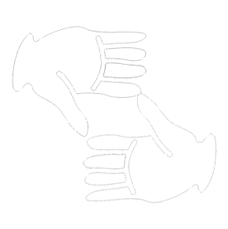
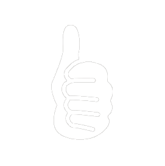
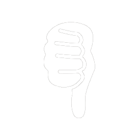

Image has been posted to Twitter!

Byte-me
I am not a photographer but I can picture us together :P
 Use the following Hand gestures to start camera count down :
 Thumbs up to post to Twitter
 Thumbs down to re-take your picture
Awaiting gestures...
Image has been posted to Twitter!